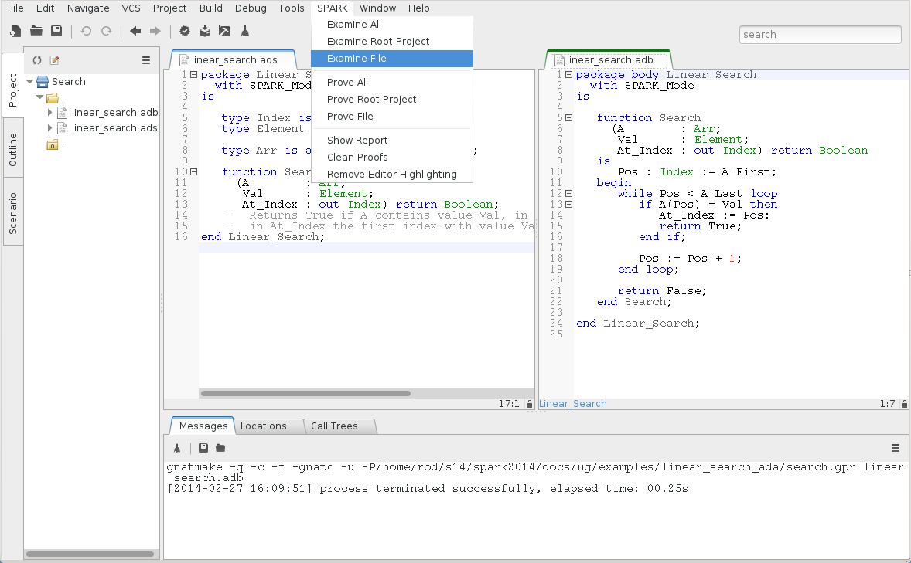
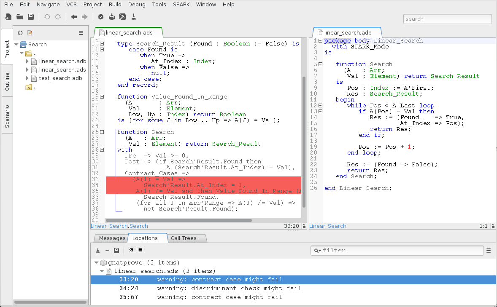
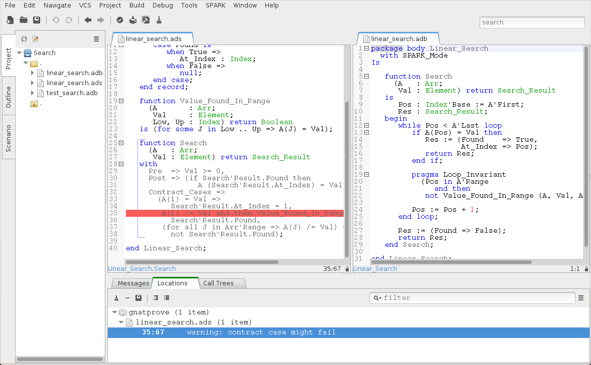

6. SPARK Tutorial¶
This chapter describes a simple use of the SPARK toolset on a program written completely in SPARK, within the GPS integrated development environment. All the tools may also be run from the command-line, see Command Line Invocation.
Note
If you’re using SPARK Discovery instead of SPARK Pro, some of the proofs in this tutorial may not be obtained automatically. See the section on Alternative Provers to install additional provers that are not present in SPARK Discovery.
6.1. Writing SPARK Programs¶
As a running example, we consider a naive searching algorithm for an unordered
collection of elements. The algorithm returns whether the collection contains
the desired value, and if so, at which index. The collection is implemented
here as an array. We deliberately start with an incorrect program for package
Search, in order to explain how the SPARK toolset can help correct these
errors. The final version of the linear_search example is part of the
Examples in the Toolset Distribution.
We start with creating a GNAT project file in search.gpr:
1 2 3 4 5 6 7 | project Search is
for Source_Dirs use (".");
package Compiler is
for Default_Switches ("Ada") use ("-gnatwa");
end Compiler;
end Search;
|
It specifies that the source code to inspect is in the current directory, and
that the code should be compiled at maximum warning level (switch
-gnatwa). GNAT projects are used by most tools in the GNAT toolsuite;
for in-depth documentation of this technology, consult the GNAT
User’s Guide. Documentation and examples for the SPARK language and tools are
also available via the menu in GPS.
The obvious specification of Linear_Search is given
in file linear_search.ads, where
we specify that the spec is in SPARK by using aspect SPARK_Mode.
1 2 3 4 5 6 7 8 9 10 11 12 13 14 15 16 | package Linear_Search
with SPARK_Mode
is
type Index is range 1 .. 10;
type Element is new Integer;
type Arr is array (Index) of Element;
function Search
(A : Arr;
Val : Element;
At_Index : out Index) return Boolean;
-- Returns True if A contains value Val, in which case it also returns
-- in At_Index the first index with value Val. Returns False otherwise.
end Linear_Search;
|
The implementation of Linear_Search is given in
file linear_search.adb, where we specify
that the body is in SPARK by using aspect SPARK_Mode. It is as obvious
as its specification, using a loop to go through the array parameter A and
looking for the first index at which Val is found, if there is such an
index.
1 2 3 4 5 6 7 8 9 10 11 12 13 14 15 16 17 18 19 20 21 22 23 24 | package body Linear_Search
with SPARK_Mode
is
function Search
(A : Arr;
Val : Element;
At_Index : out Index) return Boolean
is
Pos : Index := A'First;
begin
while Pos < A'Last loop
if A(Pos) = Val then
At_Index := Pos;
return True;
end if;
Pos := Pos + 1;
end loop;
return False;
end Search;
end Linear_Search;
|
We can check that the above code is valid Ada by using the Build > Check
Semantic menu, which completes without any errors or warnings:
6.1.1. Checking SPARK Legality Rules¶
Now, let us run GNATprove on this unit, using the menu, so that it issues errors on SPARK code that violates SPARK rules:
It detects here that function Search is not in SPARK, because it has
an out parameter:
The permission in Ada 2012 to have out parameters to functions is not
allowed in SPARK, because it causes calls to have side-effects (assigning to
their out parameters), which means that various calls in the same
expression may be conflicting, yielding different results depending on the
order of evaluation of the expression.
We correct this problem by defining a record type Search_Result in
linear_search.ads holding both the Boolean result and the index for cases
when the value is found, and making Search return this type:
1 2 3 4 5 6 7 8 9 10 11 12 13 14 15 16 17 18 19 | package Linear_Search
with SPARK_Mode
is
type Index is range 1 .. 10;
type Element is new Integer;
type Arr is array (Index) of Element;
type Search_Result is record
Found : Boolean;
At_Index : Index;
end record;
function Search
(A : Arr;
Val : Element) return Search_Result;
end Linear_Search;
|
The implementation of Search in linear_search.adb is modified to use
this type:
1 2 3 4 5 6 7 8 9 10 11 12 13 14 15 16 17 18 19 20 21 22 23 24 25 26 | package body Linear_Search
with SPARK_Mode
is
function Search
(A : Arr;
Val : Element) return Search_Result
is
Pos : Index := A'First;
Res : Search_Result;
begin
while Pos < A'Last loop
if A(Pos) = Val then
Res.At_Index := Pos;
Res.Found := True;
return Res;
end if;
Pos := Pos + 1;
end loop;
Res.Found := False;
return Res;
end Search;
end Linear_Search;
|
6.1.2. Checking SPARK Initialization Policy¶
Re-running GNATprove on this unit, still using the menu, now reports a different kind of error. This time it is the
static analysis pass of GNATprove called flow analysis that detects an
attempt of the program to return variable Res while it is not fully
initialized, thus violating the initialization policy of SPARK:
Inside the GPS editor, we can click on the icon, either on the left of the
message, or on line 23 in file linear_search.adb, to show the path on which
Res.At_Index is not initialized:
Another click on the icon makes the path disappear.
This shows that, when the value is not found, the component At_Index of the
value returned is indeed not initialized. Although that is allowed in Ada,
SPARK requires that all inputs and outputs of subprograms are completely
initialized (and the value returned by a function is such an output). As a
solution, we could give a dummy value to component At_Index when the search
fails, but we choose here to turn the type Search_Result in
linear_search.ads into a discriminant record, so that the component
At_Index is only usable when the search succeeds:
1 2 3 4 5 6 7 8 | type Search_Result (Found : Boolean := False) is record
case Found is
when True =>
At_Index : Index;
when False =>
null;
end case;
end record;
|
Then, in the implementation of Search in linear_search.adb, we change
the value of the discriminant depending on the success of the search:
1 2 3 4 5 6 7 8 9 10 11 12 13 14 15 16 17 18 19 20 | function Search
(A : Arr;
Val : Element) return Search_Result
is
Pos : Index := A'First;
Res : Search_Result;
begin
while Pos < A'Last loop
if A(Pos) = Val then
Res := (Found => True,
At_Index => Pos);
return Res;
end if;
Pos := Pos + 1;
end loop;
Res := (Found => False);
return Res;
end Search;
|
Now re-running GNATprove on this unit, using the menu, shows that there are no reads of uninitialized data.
6.1.3. Writing Functional Contracts¶
We now have a valid SPARK program. It is not yet very interesting SPARK code
though, as it does not contain any contracts, which are necessary to be able to
apply formal verification modularly on each subprogram, independently of the
implementation of other subprograms. The precondition constrains the value of
input parameters, while the postcondition states desired properties of the
result of the function. See Preconditions and Postconditions for
more details. Here, we can require in the precondition of Search in
linear_search.ads that callers of Search always pass a non-negative
value for parameter Val, and we can state that, when the search succeeds,
the index returned points to the desired value in the array:
1 2 3 4 5 6 7 | function Search
(A : Arr;
Val : Element) return Search_Result
with
Pre => Val >= 0,
Post => (if Search'Result.Found then
A (Search'Result.At_Index) = Val),
|
Notice the use of an if-expression in the postcondition to express an
implication: if the search succeeds it implies that the value at the returned index
is the value that was being searched for. Note also the use of Search'Result
to denote the value returned by the function.
This contract is still not very strong. Many faulty implementations of the
search would pass this contract, for example one that always fails (thus
returning with Search'Result.Found = False). We could reinforce the
postcondition, but we choose here to do it through a contract by cases, which
adds further constraints to the usual contract by precondition and
postcondition. We want to consider here three cases:
- the desired value is found at the first index (1)
- the desired value is found at other indexes (2 to 10)
- the desired value is not found in the range 1 to 10
In the first case, we want to state that the index returned is 1. In the second
case, we want to state that the search succeeds. In the third case, we want to
state that the search fails. We use a helper function Value_Found_In_Range
in linear_search.ads to express that a value Val is found in an array
A within given bounds Low and Up:
1 2 3 4 5 6 7 8 9 10 11 12 13 14 15 16 17 18 19 20 | function Value_Found_In_Range
(A : Arr;
Val : Element;
Low, Up : Index) return Boolean
is (for some J in Low .. Up => A(J) = Val);
function Search
(A : Arr;
Val : Element) return Search_Result
with
Pre => Val >= 0,
Post => (if Search'Result.Found then
A (Search'Result.At_Index) = Val),
Contract_Cases =>
(A(1) = Val =>
Search'Result.At_Index = 1,
Value_Found_In_Range (A, Val, 2, 10) =>
Search'Result.Found,
(for all J in Arr'Range => A(J) /= Val) =>
not Search'Result.Found);
|
Note that we express Value_Found_In_Range as an expression function, a
function whose body consists of a single expression, which can be given in a
specification file.
Note also the use of quantified expressions to express properties over
collections: for some in Value_Found_In_Range expresses an existential
property (there exists an index in this range such that ...), for all in
the third contract case expresses a universal property (all indexes in this
range are such that ...).
Each contract case consists of a guard (on the left of the arrow symbol)
evaluated on subprogram entry, and a consequence (on the right of the arrow
symbol) evaluated on subprogram exit. The special expression
Search'Result may be used in consequence expressions. The three
guards here should cover all possible cases, and be disjoint. When a contract
case is activated (meaning its guard holds on entry), its consequence should
hold on exit.
The program obtained so far is a valid SPARK program, which GNAT analyzes semantically without errors or warnings.
6.2. Testing SPARK Programs¶
We can compile the above program, and test it on a set of selected inputs. The
following test program in file test_search.adb exercises the case where the
searched value is present in the array and the case where it is not:
1 2 3 4 5 6 7 8 9 10 11 12 13 14 15 16 17 18 19 20 21 22 23 24 25 26 | with Linear_Search; use Linear_Search;
with Ada.Text_IO; use Ada.Text_IO;
procedure Test_Search is
A : constant Arr := (1, 5, 3, 8, 8, 2, 0, 1, 0, 4);
Res : Search_Result;
begin
Res := Search (A, 1);
if Res.Found then
if Res.At_Index = 1 then
Put_Line ("OK: Found existing value at first index");
else
Put_Line ("not OK: Found existing value at other index");
end if;
else
Put_Line ("not OK: Did not find existing value");
end if;
Res := Search (A, 6);
if not Res.Found then
Put_Line ("OK: Did not find non-existing value");
else
Put_Line ("not OK: Found non-existing value");
end if;
end Test_Search;
|
We can check that the implementation of Linear_Search passes this test by
compiling and running the test program:
$ gnatmake test_search.adb
$ test_search
> OK: Found existing value at first index
> OK: Did not find non-existing value
Note
We use above the command-line interface to compile and run the test program
test_search.adb. You can do the same inside GPS by selecting the menu
and inside the panel
Main of folder Sources, add test_search.adb as a
main file. Then, click OK. To generate the test_search
executable, you can now select the menu and to run the test_search executable, you can
select the menu .
But only part of the program was really tested, as the contract was not checked
during execution. To check the contract at run time, we recompile with the
switch -gnata (a for assertions, plus switch -f to force
recompilation of sources that have not changed):
- a check is inserted that the precondition holds on subprogram entry
- a check is inserted that the postcondition holds on subprogram exit
- a check is inserted that the guards of contract cases are disjoint on subprogram entry (no two cases are activated at the same time)
- a check is inserted that the guards of contract cases are complete on subprogram entry (one case must be activated)
- a check is inserted that the consequence of the activated contract case holds on subprogram exit
Note that the evaluation of the above assertions may also trigger other run-time check failures, like an index out of bounds. With these additional run-time checks, an error is reported when running the test program:
$ gnatmake -gnata -f test_search.adb
$ test_search
> raised SYSTEM.ASSERTIONS.ASSERT_FAILURE : contract cases overlap for subprogram search
Note
We use above the command-line interface to add compilation switch -gnata
and force recompilation with switch -f. You can do the same inside GPS
by selecting the menu and inside the
panel Ada of the subfolder Switches of folder
Build, select the checkbox Enable assertions. Then,
click OK. To force recompilation with the new switch, you can
now select the menu followed
by recompilation with . Then run the test_search executable with
.
It appears that two contract cases for Search are activated at the same
time! More information can be generated at run time if the code is compiler
with the switch -gnateE:
$ gnatmake -gnata -gnateE -f test_search.adb
$ test_search
> raised SYSTEM.ASSERTIONS.ASSERT_FAILURE : contract cases overlap for subprogram search
> case guard at linear_search.ads:33 evaluates to True
> case guard at linear_search.ads:35 evaluates to True
It shows here that the guards of the first and second contract cases hold at
the same time. This failure in annotations can be debugged with gdb like a
failure in the code (provided the program was compiled with appropriate
switches, like -g -O0). The stack trace inside GPS shows that the error
occurs on the first call to Search in the test program:
Indeed, the value 1 is present twice in the array, at indexes 1 and 8, which
makes the two guards A(1) = Val and Value_Found_In_Range (A, Val, 2,
10) evaluate to True. We correct the contract of Search in
linear_search.ads by strengthening the guard of the second contract case,
so that it only applies when the value is not found at index 1:
1 2 3 4 5 6 7 | Contract_Cases =>
(A(1) = Val =>
Search'Result.At_Index = 1,
A(1) /= Val and then Value_Found_In_Range (A, Val, 2, 10) =>
Search'Result.Found,
(for all J in Arr'Range => A(J) /= Val) =>
not Search'Result.Found);
|
With this updated contract, the test passes again, but this time with assertions checked at run time:
$ gnatmake -gnata test_search.adb
$ test_search
> OK: Found existing value at first index
> OK: Did not find non-existing value
The program obtained so far passes successfully a test campaign (of one test!) that achieves 100% coverage for all the common coverage criteria, once impossible paths have been ruled out: statement coverage, condition coverage, the MC/DC coverage used in avionics, and even the full static path coverage.
6.3. Proving SPARK Programs¶
Formal verification of SPARK programs is a two-step process:
- the first step checks that flows through the program correctly implement the specified flows (if any), and that all values read are initialized.
- the second step checks that the program correctly implement its specified contracts (if any), and that no run-time error can be raised.
Step 1 is implemented as a static analysis pass in the tool GNATprove, in
flow mode. We have seen this flow analysis at work earlier (see
Checking SPARK Initialization Policy). Step 2 is implemented as a
deductive verification (a.k.a. proof) pass in the tool GNATprove, in the
default all mode.
The difference between these two steps should be emphasized. Flow analysis in
step 1 is a terminating algorithm, which typically takes 2 to 10 times as long
as compilation to complete. Proof in step 2 is based on the generation of
logical formulas for each check to prove, which are then passed on to automatic
provers to decide whether the logical formula holds or not. The generation of
logical formulas is a translation phase, which typically takes 10 times as long
as compilation to complete. The automatic proof of logical formulas may take a
very long time, or never terminate, hence the use of a timeout (1s at proof
level 0) for each call to the automatic provers. It is this last step which
takes the most time when calling GNATprove on a program, but it is also a
step which can be completely parallelized (using switch -j to specify the
number of parallel processes): each logical formula can be proved
independently, so the more cores are available the faster it completes.
Note
The proof results presented in this tutorial may slightly vary from the results you obtain on your machine, as automatic provers may take more or less time to complete a proof depending on the platform and machine used.
Let us continue with our running example. This time we will see how step 2
works to prove contracts and absence of run-time errors, using the main
mode all of GNATprove reached through the menu.
Note
The proof panels presented in this tutorial correspond to an advanced user
profile. A simpler proof panel is displayed when the basic user profile is
selected (the default). You can switch to the advanced user profile in menu
, by changing the value of
User profile from Basic to Advanced. See Running GNATprove from GPS for details.
We use the default settings and click on . It completes in a few seconds, with a message stating that some checks could not be proved:
Note that there is no such message on the postcondition of Search,
which means that it was proved. Likewise, there are no such messages on the
body of Search, which means that no run-time errors can be raised
when executing the function.
These messages correspond to checks done when exiting from Search. It is
expected that not much can be proved at this point, given that the body of
Search has a loop but no loop invariant, so the formulas generated for
these checks assume the worst about locations modified in the loop. A loop
invariant is a special pragma Loop_Invariant stating an assertion in a
loop, which can be both executed at run-time like a regular pragma Assert,
and used by GNATprove to summarize the effect of successive iterations of the
loop. We need to add a loop invariant in linear_search.adb stating enough
properties about the cumulative effect of loop iterations, so that the contract
cases of Search become provable. Here, it should state that the value
searched was not previously found:
pragma Loop_Invariant
(not Value_Found_In_Range (A, Val, A'First, Pos));
As stated above, this invariant holds exactly between the two statements in the
loop in linear_search.adb (after the if-statement, before the increment of
the index). Thus, it should be inserted at this place. With this loop
invariant, two checks previously not proved are now proved, and a check
previously proved becomes unproved:
The new unproved checks may seem odd, since all we did was add information in the form of a loop invariant. The reason is that we also removed information at the same time. By adding a loop invariant, we require GNATprove to prove iterations around the (virtual) loop formed by the following steps:
- Take any context satisfying the loop invariant, which summarizes all previous iterations of the loop.
- Execute the end of a source loop iteration (just the increment here).
- Test whether the loop exits, and continue with values which do not exit.
- Execute the start of a source loop iteration (just the if-statement here).
- Check that the loop invariant still holds.
Around this virtual loop, nothing guarantees that the index Pos is
below the maximal index at step 2 (the increment), so the range check
cannot be proved. It was previously proved because, in the absence of a
loop invariant, GNATprove proves iterations around the source loop, and
then we get the information that, since the loop did not exit, its test
Pos < A'Last is false, so the range check can be proved.
We solve this issue by setting the type of Pos in linear_search.adb to
the base type of Index, which ranges past the last value of
Index. (This may not be the simplest solution, but we use it here for the
dynamics of this tutorial.)
Pos : Index'Base := A'First;
And we add the range information for Pos to the loop invariant in
linear_search.adb:
pragma Loop_Invariant
(Pos in A'Range
and then
not Value_Found_In_Range (A, Val, A'First, Pos));
This allows GNATprove to prove the range check, but not the contract:
This is actually progress! Indeed, the loop invariant should be strong enough to:
- prove the absence of run-time errors in the loop and after the loop
- prove that it is preserved from iteration to iteration
- prove the postcondition and contract cases of the subprogram
So we have just achieved goal 1 above!
As we have modified the code and annotations, it is a good time to compile and run our test program, before doing any more formal verification work. This helps catch bugs early, and it’s easy to do! In particular, the loop invariant will be dynamically checked at each iteration through the loop. Here, testing does not show any problems:
$ gnatmake -gnata test_search.adb
$ test_search
> OK: Found existing value at first index
> OK: Did not find non-existing value
The next easy thing to do is to increase the timeout of automatic provers. Its
default of 1s is deliberately low, to facilitate interaction with GNATprove
during the development of annotations, but it is not sufficient to prove the
more complex checks. Let’s increase it to 10s (or equivalently set the Proof
level to 2 in the proof panel corresponding to a basic user profile), and
rerun GNATprove:
The unproved check remains in the contract cases of Linear_Search. The next
step is to use the contextual menu
available on line 35:
We select the Progressively split value for choice Proof strategy in
the window raised in order to maximize proof precision (or equivalently set the
Proof level to 3 in the proof panel corresponding to a basic user profile),
and click on :
This runs GNATprove only on the checks that originate from line 35, in a
special mode which considers separately individual execution paths if
needed. The check is still not proved, but GPS now displays an icon, either on
the left of the message, or on line 35 in file linear_search.ads, to show the path
on which the contract case is not proved:
This corresponds to a case where the implementation of Search does not find
the searched value, but the guard of the second contract case holds, meaning
that the value is present in the range 2 to 10. Looking more closely at the
path highlighted, we can see that the loop exits when Pos = A'Last, so the
value 10 is never considered! We correct this bug by changing the loop test in
linear_search.adb from a strict to a non-strict comparison operation:
while Pos <= A'Last loop
On this modified code, we rerun GNATprove on line 35, checking the box
Report checks proved to get information even when a check is proved. The
reassuring green color (and the accompanying info message) show that the check
was proved this time:
As usual after code changes, we rerun the test program, which shows no
errors. Rerunning GNATprove on the complete file shows no more unproved
checks. The Linear_Search unit has been fully proved. To see all the checks that
were proved, we can rerun the tool with box Report checks proved checked,
which displays the results previously computed:
Note that one thing that was not proved is that Search
terminates. As it contains a while-loop, it could loop forever. To prove that
it is not the case, we add a loop variant, which specifies a quantity varying
monotonically with each iteration. Since this quantity is bounded by its type,
and we have proved absence of run-time errors in Search, proving
this monotonicity property also shows that there cannot be an infinite number
of iterations of the loop. The natural loop variant for Search is
the index Pos, which increases at each loop iteration:
pragma Loop_Variant (Increases => Pos);
With this line inserted after the loop invariant in linear_search.adb, the
test program still runs without errors (it checks dynamically that the loop
variant is respected), and the program is still fully proved. Here is the final
version of Linear_Search, with the complete annotations:
1 2 3 4 5 6 7 8 9 10 11 12 13 14 15 16 17 18 19 20 21 22 23 24 25 26 27 28 29 30 31 32 33 34 35 36 37 38 39 40 | package Linear_Search
with SPARK_Mode
is
type Index is range 1 .. 10;
type Element is new Integer;
type Arr is array (Index) of Element;
type Search_Result (Found : Boolean := False) is record
case Found is
when True =>
At_Index : Index;
when False =>
null;
end case;
end record;
function Value_Found_In_Range
(A : Arr;
Val : Element;
Low, Up : Index) return Boolean
is (for some J in Low .. Up => A(J) = Val);
function Search
(A : Arr;
Val : Element) return Search_Result
with
Pre => Val >= 0,
Post => (if Search'Result.Found then
A (Search'Result.At_Index) = Val),
Contract_Cases =>
(A(1) = Val =>
Search'Result.At_Index = 1,
A(1) /= Val and then Value_Found_In_Range (A, Val, 2, 10) =>
Search'Result.Found,
(for all J in Arr'Range => A(J) /= Val) =>
not Search'Result.Found);
end Linear_Search;
|
1 2 3 4 5 6 7 8 9 10 11 12 13 14 15 16 17 18 19 20 21 22 23 24 25 26 27 28 29 30 31 32 | package body Linear_Search
with SPARK_Mode
is
function Search
(A : Arr;
Val : Element) return Search_Result
is
Pos : Index'Base := A'First;
Res : Search_Result;
begin
while Pos <= A'Last loop
if A(Pos) = Val then
Res := (Found => True,
At_Index => Pos);
return Res;
end if;
pragma Loop_Invariant
(Pos in A'Range
and then
not Value_Found_In_Range (A, Val, A'First, Pos));
pragma Loop_Variant (Increases => Pos);
Pos := Pos + 1;
end loop;
Res := (Found => False);
return Res;
end Search;
end Linear_Search;
|
The final version of the linear_search example is part of the
Examples in the Toolset Distribution. This concludes our tutorial on the
SPARK toolset.